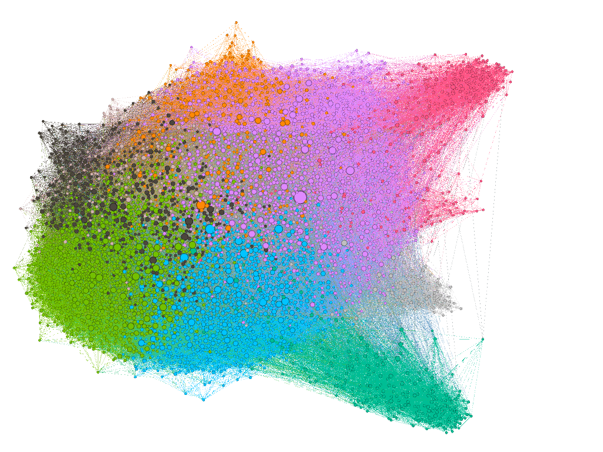

Welcome to the homepage of the Northernmost Graph Machine Learning group
We are located at the UiT the Arctic University of Norway and we are affiliated with the IEEE Task Force Learning for Graphs.
Welcome to the homepage of the Northernmost Graph Machine Learning group
We are located at the UiT the Arctic University of Norway and we are affiliated with the IEEE Task Force Learning for Graphs.
{{ post.date | date: "%B %-d, %Y" }}
{{ post.excerpt }}
Our research activities focus on Graph Neural Networks and other machine learning methodologies to process and analyze data represented as graphs. We are also interested in graph signal processing, network science, graph theory, graph visualization, and other graph-related themes. We gather regularly to discuss the latest trends in graph machine learning, organize tutorials, workshops, and lectures about our research topics.